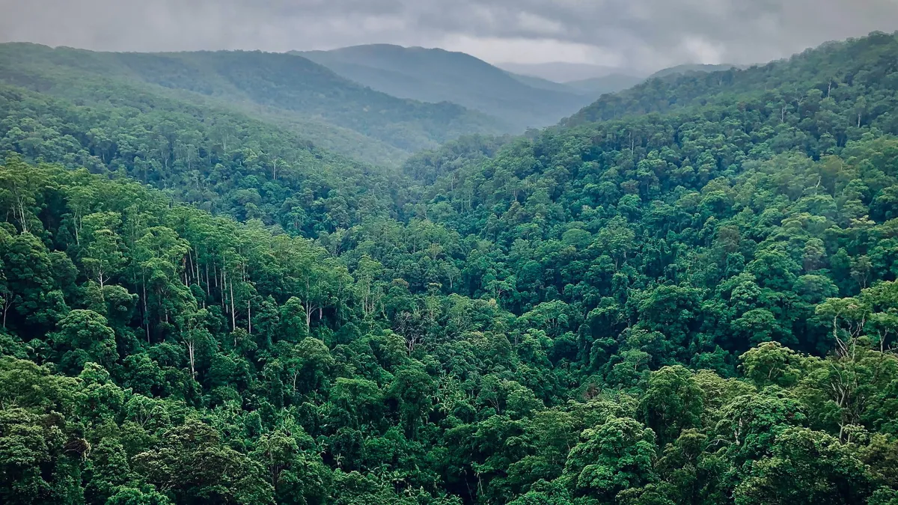

Ecological capital is hard to see
Land can be gaining or losing fertility, water capacity, biodiversity, and resilience long before the change appears in financial records, production reports, or surface appearance.

Now forming pilot partnerships
Conversational ecological intelligence
Shepherdess is being grown as conversational ecological intelligence with a long-term trajectory toward domain-grounded AGI. Its role is to learn a place, connect with the tools that manage it, and help turn ecological understanding into actions that build the living capital behind durable abundance.
The problem
Gardens, lawns, farms, ranches, public landscapes, and corporate properties are often managed for appearance, compliance, or short-term output while the living base that future production depends on is quietly drawn down. The deeper opportunity is to build ecological capital until the natural dividends of a place exceed its old productive baseline without degrading the system that produces them.
Land can be gaining or losing fertility, water capacity, biodiversity, and resilience long before the change appears in financial records, production reports, or surface appearance.
Short-term yield, neatness, or maintenance targets can reduce the soil, water, habitat, and resilience that make larger future yields possible.
Carbon, nature, resilience, supply-chain, and land-value funding depend on baselines, interventions, monitoring, and credible outcome records.
The AI thesis
At the center of Shepherdess is an ecological intelligence that can be consulted in ordinary language and grounded in the facts of a place. It helps living systems become legible by actively building site context, then guiding decisions by whether they grow the productive capacity of the system over time, not merely by whether they raise immediate output.
Shepherdess connects intent to place: what to plant, where water should move, when to graze, how to reduce inputs, and how to build the living capacity that future abundance depends on.
From the first engagement, Shepherdess identifies missing information, guides the search for useful records, and develops a working picture of the land's history and present condition.
Every site accumulates maps, photos, observations, management actions, seasonal context, and measured changes in living systems.
Soil monitors, weather stations, cameras, irrigation, water controls, equipment records, and agricultural systems become part of the intelligence loop.
Shepherdess grows from the loop between recommendation, intervention, result, and adaptation, not from abstract text alone.
The long-term aim is AGI grounded in ecological production: intelligence shaped by repeated cycles of sensing, acting, measuring, and improving in the physical world.
How it works
The goal is to make ecological production an intelligent, measurable, compounding process through an AI relationship with the land. Supporting platform surfaces can organize maps, tasks, records, evidence, budgets, and connected tools while Shepherdess remains the primary interface for planning, action, and learning as the site builds capacity.
Gather goals, constraints, budgets, site records, ownership history, production history, tools, and ecological ambitions.
Integrate maps, photos, observations, sensors, management history, prior outcomes, and missing-information requests into site memory.
Link soil monitoring, weather, cameras, irrigation, watering systems, equipment records, and agricultural technology into the operating layer.
Turn conversation into budget-aware planting, water, soil, habitat, animal, food, fiber, and seasonal production actions across people and tools.
Integrate outcomes with the baseline, adapt as ecological complexity changes, and project when increased ecological capital can support larger future dividends.
Ecological MRV
The largest bottleneck in ecological finance is not lack of intent. It is qualifying, quantifying, supervising, and proving that production is increasing ecological capital rather than consuming it. Shepherdess is intended to grow the long-term record that shows whether a site is moving from drawdown toward compounding ecological dividends.
Map the current state of soil, cover, canopy, water behavior, habitat, inputs, productivity, and management history.
Track what changed: plantings, grazing patterns, water systems, soil practices, biomass cycling, restoration work, and maintenance shifts.
Measure food, fiber, carbon, biodiversity, water retention, resilience, productivity, reduced input dependency, ecological systems complexity, and the system's capacity to keep producing.
Prepare evidence for carbon MRV, nature credits, green infrastructure, resilience funding, supply-chain premiums, productive landscape finance, and land-value reporting.
Methods
Shepherdess draws from practical ecological schools and evaluates them against site outcomes. The question is always what increases useful living complexity in this place, under these conditions, over time.
Markets
Shepherdess enters through land management and is positioned to grow into a measurement layer for ecological production. Carbon is one doorway. The larger opportunity is non-extractive ecological industry: managed systems that build the living base first, then produce food, water, biodiversity, resilience, supply-chain value, and land value from dividends rather than depletion.
Baseline records, interventions, permanence evidence, biodiversity metrics, and outcome history showing whether ecological capital is growing before dividends are claimed.
Campuses, municipalities, utilities, and corporate landholders need measurable improvements in water, heat, habitat, food production, maintenance, and resilience.
Farms, ranches, timber, food, fiber, and livestock systems need credible records proving that production is building the ecological base it depends on.
Who it serves
The same core intelligence can serve personal land, professional land care, production landscapes, and institutional properties because each begins with the same question: how does this living system become more capable, then produce more from that increased capacity over time?
Homeowners, gardeners, homesteaders, and lawn conversion projects cultivating food, shade, beauty, pollinators, and lower-input abundance close to home.
Farms, ranches, orchards, grasslands, poultry systems, aquaculture, forest-edge systems, and ecological producers managing soil, water, forage, animals, food, fiber, and productivity together.
Campuses, parks, municipalities, corporate landholders, utilities, restoration projects, estuaries, and sustainability teams turning land and water systems into living assets.
The larger vision
Shepherdess begins with the land and water systems people already manage. Its larger technical trajectory points toward domain-grounded AGI grown through ecological production at scale: living feedback, site memory, action, adaptation, cross-site learning, and continuity. The path to intelligence is the work itself.
Pilot and partnership
We are seeking pilot partners across personal land, farms, ranches, ecological land practice, institutions, funders, and strategic partners interested in productive living systems.